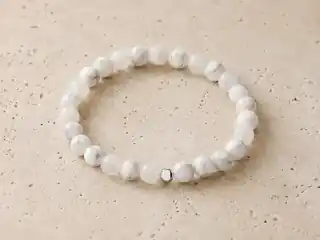
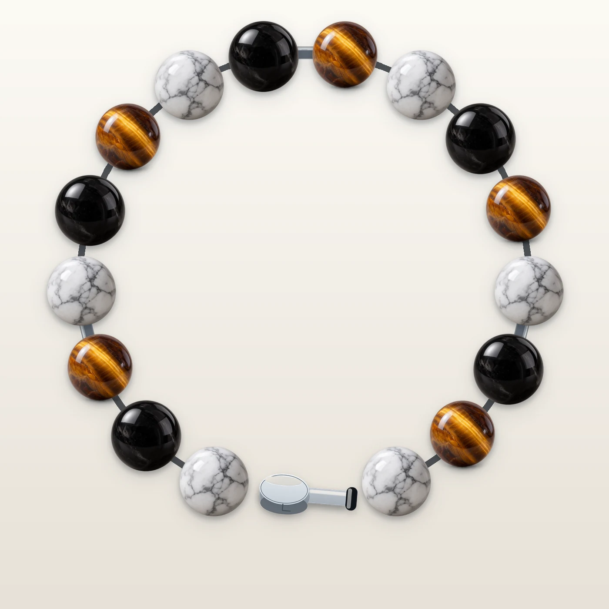
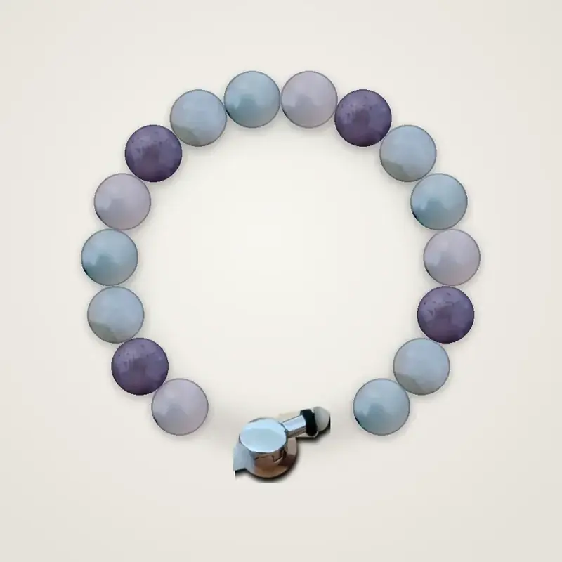
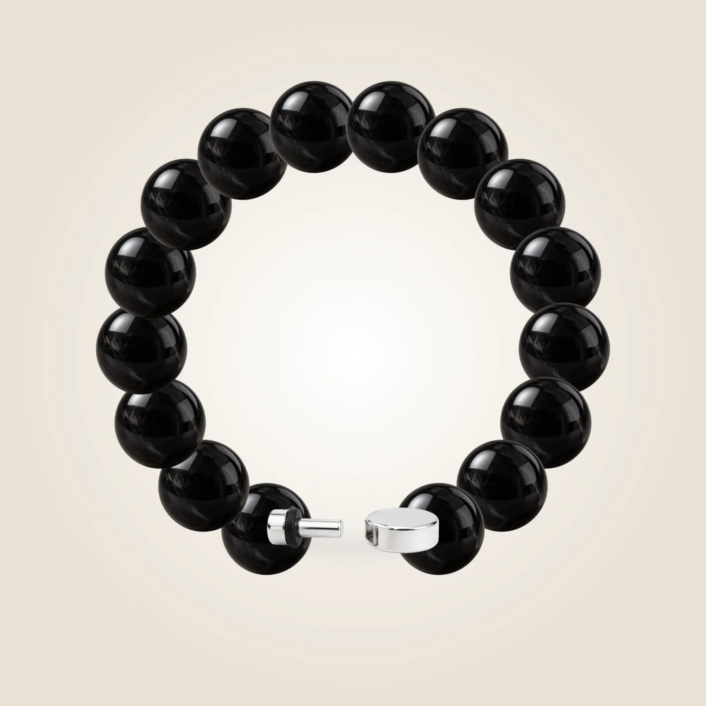
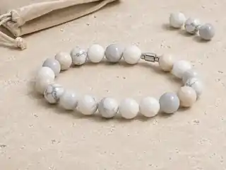

Perlivio Essentiel
L’essentiel de votre histoire
Les pierres seules prennent toute la place. Une ligne calme, complète dès le premier jour, qui laisse votre histoire évoluer sans artifice.
Découvrir la gamme →
Le bracelet qui garde le fil
Complet dès le premier jour. À chaque étape, une nouvelle pierre peut prendre place. Celles qui vous ont accompagné restent dans votre Réserve.
Les gammes
Cinq lectures d’un même principe : un bijou complet, modifiable et personnel. Les différences tiennent à l’allure, aux accents décoratifs et aux matières à confirmer avant commercialisation.

Perlivio Essentiel
Les pierres seules prennent toute la place. Une ligne calme, complète dès le premier jour, qui laisse votre histoire évoluer sans artifice.
Découvrir la gamme →
Perlivio Métal
Des intercalaires décoratifs donnent du rythme à la composition sans changer le principe Perlivio : une pierre de Chemin remplace une Socle.
Découvrir la gamme →
Perlivio Inox
Une lecture fraîche et structurée, pensée pour celles et ceux qui aiment les reflets acier et les contrastes minéraux.
Découvrir la gamme →
Perlivio Argent
La déclinaison la plus précieuse du concept, avec des détails fins et une présence plus joaillière.
Découvrir la gamme →
Perlivio Signature
Une base volontairement homogène ou contrastée, conçue pour rendre l’évolution future du bracelet particulièrement visible.
Découvrir la gamme →La différence Perlivio
Vous ne recommencez pas votre histoire à chaque changement. Vous lui faites simplement une place.
Une Perle Origine et des Perles Socles forment déjà un bracelet complet.
Vous choisissez une Perle de Chemin pour la matérialiser.
La nouvelle pierre prend la place d’une Socle : le confort et l’équilibre du bracelet restent cohérents.
La Perle Socle retirée rejoint votre Réserve Perlivio et peut revenir plus tard.
Avec le temps, le bracelet ressemble de plus en plus à votre propre histoire.
L’évolution
Une composition pleine, harmonieuse, prête à être portée.
Des Perles de Chemin remplacent progressivement certaines Socles.
Les repères se mêlent, reviennent ou changent de place.
Les Perles Socles
Les Perles Socles ne sont ni des perles “vides” ni des éléments provisoires. Ce sont les pierres qui composent réellement votre premier bracelet. Lorsqu’une Perle de Chemin prend leur place, elles rejoignent votre Réserve.
Comprendre le fonctionnement →
La Réserve Perlivio
Une pierre retirée n’est pas une pierre oubliée. Gardez-la, faites-la revenir, imaginez plus tard une seconde création ou transmettez-la.
Découvrir la RéserveLes pierres Perlivio
18 pierres, présentées sans promesse médicale. Leur signification vient d’abord de ce que vous décidez d’y associer.

Le site distingue ce qui est validé de ce qui doit encore être confirmé avec l’atelier et les fournisseurs.
Fabrication →Pas de grade inox, d’argent 925 ou d’origine revendiqués sans justificatif.
Qualité & matériaux →Chaque donnée fournisseur pertinente pourra être rattachée à la collection et à la pierre concernées.
Traçabilité →Le bracelet est pensé comme un objet que l’on garde et que l’on accompagne.
Entretien & réparation →Après le premier bracelet
Ajoutez une étape quand elle compte, réutilisez votre Réserve ou créez plus tard une seconde composition.
Ajouter des Perles de Chemin ou réorganiser une composition existante.
Continuer mon chemin →À l’unité ou en packs, sans abonnement forcé ni accumulation automatique.
Découvrir →Les Socles remplacées restent disponibles pour revenir ou rejoindre une autre création.
Voir la Réserve →Un bracelet à composer ou une carte cadeau, sans choisir l’histoire de l’autre.
Offrir Perlivio →Votre premier chapitre